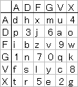

ADFGVX Cipher
Six letters, a 6×6 grid, letters AND digits — Painvin solved important June 1918 traffic
Painvin recovered keys from German traffic in June 1918.
An order whose value depended on time
The June 1918 ammunition radiogram urged faster supply, including movement by daylight when unobserved. It mattered as evidence of preparations, not as a complete battle plan. Painvin’s reading had to reach decision-makers while there was still time to respond.
The dates need care. The French Ministry of Armed Forces commemorates the decipherment on 2 June 1918; Kahn’s chapter 11 places the quoted ammunition message on 3 June. The book’s chapter 5 notes preserve this difference rather than merging the chronologies.
Sources: Ministry of Armed Forces, “2 juin 1918 … Radiogramme de la Victoire”; David Kahn, The Codebreakers, chapter 11. The widget uses an invented keyed square and message, not the historical radiogram or its recovered key.
Why This Matters
ADFGVX extended ADFGX to a 6×6 square, then transposed the resulting coordinate letters. Georges Painvin’s solutions in June 1918 yielded important French intelligence. A solution of one day’s traffic should not be described as permanent access to every message using the cipher.

ADFGVX was introduced on June 1, 1918 — eight days before Germany's Gneisenau Offensive. Adding V to the five-letter alphabet created a 6×6 grid that could encode all 26 letters plus the 10 digits 0-9. This was essential for military traffic involving coordinates, unit numbers, and dates.
Painvin solved important traffic shortly after ADFGVX appeared. His retrospective account of the June 1918 radiogram explains the operational context. Exact claims about weight loss, near-fatal exhaustion, or the sole cause of an offensive’s failure are not needed to establish the cryptanalytic achievement.
6×6 grid (A,D,F,G,V,X):
A D F G V X
A p h 0 q g 6
D 4 m e a 1 y
F n o f d x k
G r 3 c v s 5
V z 9 7 j 2 w
X b t i l u 8
Worked example with this square and column key GERMAN:
EAT20 → DF DG XD VV AF
G E R M A N
D F D G X D
V V A F
Read columns in A E G M N R order:
X / FV / DV / GF / D / DA
Ciphertext: XFVDVGFDDA
To reproduce this example in the widget, replace its default keys with PH0QG64MEA1YNOFDXKR3CVS5Z97J2WBTILU8,GERMAN. The first part lists this illustrated square in row order; the widget’s default PRIVACY square is different.
Messages sharing a key can provide related evidence for recovering the transposition and substitution. Painvin combined traffic comparison and language hypotheses. This is historical statistical cryptanalysis, not “differential cryptanalysis” in the later technical sense of analyzing differences through a modern block cipher.
| Concept from ADFGVX Cipher | Modern Evolution |
|---|---|
| Digits in cipher alphabet | Digital encryption can protect encodings of letters, digits and other data |
| Substitution + transposition combination | AES SP-network: Substitution-Permutation per round |
| Daily key changes | Compare fresh session-key derivation; uniqueness depends on the protocol and its implementation |
| Exhibit | 21 of 172 |
| Era | WWI · June 1918 |
| Trust | Broken |
| Inventor | German Army Signal Corps |
| Year | June 1918 |
| Key Type | 6×6 Polybius square + columnar key |
| Broken By | Georges Painvin · June 1918 traffic |